L'arte dell'Alto Medioevo
Dal 300 all'anno 1000il contesto storico
Sette secoli in una pagina. Per capire l'arte dell'Alto Medioevo servono poche date, ma vanno sapute bene: sono quelle che spiegano perché le opere si trovano a Roma, a Ravenna o ad Aquisgrana.
Dall'impero all'arte paleocristiana
Nel 313 l'imperatore Costantino emana l'Editto di Milano: i cristiani possono pregare senza rischiare condanne. Costantino stesso si converte e fa costruire le prime chiese: nasce l'arte paleocristiana. Nel 476 cade l'impero romano d'Occidente: inizia il Medioevo, quasi mille anni divisi in Alto Medioevo (fino al 1000) e Basso Medioevo (fino alla fine del 1300).
Tra Bisanzio e Ravenna
Nel 330 Costantino fonda Costantinopoli sull'antica Bisanzio (oggi Istanbul). Nel 395 l'impero si divide in due; nel 402 Ravenna diventa capitale dell'Occidente. Dopo il 476 l'impero d'Oriente manda a Ravenna il generale ostrogoto Teodorico; nel 527 diventa imperatore Giustiniano, che fa di Bisanzio la città più potente dell'epoca.
Longobardi e Franchi
Dal 568 i Longobardi, popolo germanico, occupano il Nord Italia. Nel 774 li sconfiggono i Franchi di Carlo Magno, che nell'800 fonda il Sacro romano impero con capitale Aquisgrana. Nel 936 inizia l'età degli Ottoni.
I luoghi
Roma: San Pietro, Santa Costanza, le catacombe. Ravenna: Galla Placidia, Sant'Apollinare Nuovo, San Vitale. Cividale del Friuli: l'altare di Ratchis. Milano: l'altare di Vuolvinio. Aquisgrana: la Cappella Palatina.
Quattro arti in sette secolipaleocristiana, bizantina, longobarda, carolingia
Nel Medioevo i soggetti profani spariscono: tutta l'arte diventa religiosa. Dentro questo grande cambiamento si distinguono quattro arti, una dopo l'altra.
Arte paleocristiana · IV–V secolo
Inaugurata da Costantino. Costruisce chiese, mausolei e battisteri ispirati a edifici romani. Affreschi e mosaici guardano ancora all'arte romana, ma assumono significati simbolici.
Arte bizantina · V–VI secolo
Dal nome di Bisanzio. Arte raffinata e lontana dal linguaggio classico: mosaici dorati su tutte le pareti, architetture che perdono la monumentalità romana, immagini senza realismo né volume. Da Bisanzio arriva a Ravenna.
Arte longobarda · VII–VIII secolo
Arte dei popoli barbari: oggetti di piccole dimensioni, facili da trasportare negli spostamenti. Altari di pietra e oggetti d'oro con figure in bassorilievo schematiche e sproporzionate.
Arte carolingia · VIII–X secolo
Dal nome di Carlo Magno. Per presentarsi come erede degli imperatori romani promuove un'arte con la solennità dei monumenti di Roma e l'eleganza dei mosaici bizantini. È la Rinascita carolingia, con i grandi monasteri.
Che cosa cambiadall'arte romana all'Alto Medioevo
Le forme romane restano, ma cambiano significato. Ecco i cinque confronti da sapere.
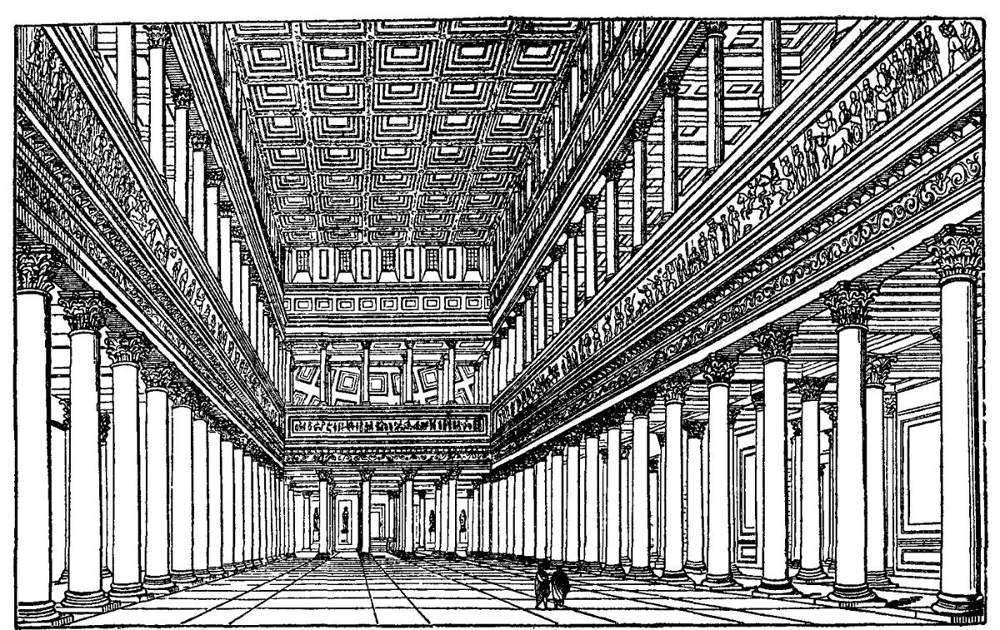
Arte romana
La basilica è un tribunale: un'aula rettangolare con l'abside, divisa da due file di colonne.
Arte paleocristiana
La basilica diventa una chiesa: stessa aula, stesse file di colonne.
Arte romana
Le immagini hanno un significato descrittivo; le figure sono realistiche e piene di dettagli.
Arte paleocristiana
Le immagini hanno un significato simbolico; le figure restano realistiche ma cercano la solennità.
Arte romana
Capitelli della tradizione classica: dorico, ionico, corinzio. Sopra poggia l'arco o l'architrave.
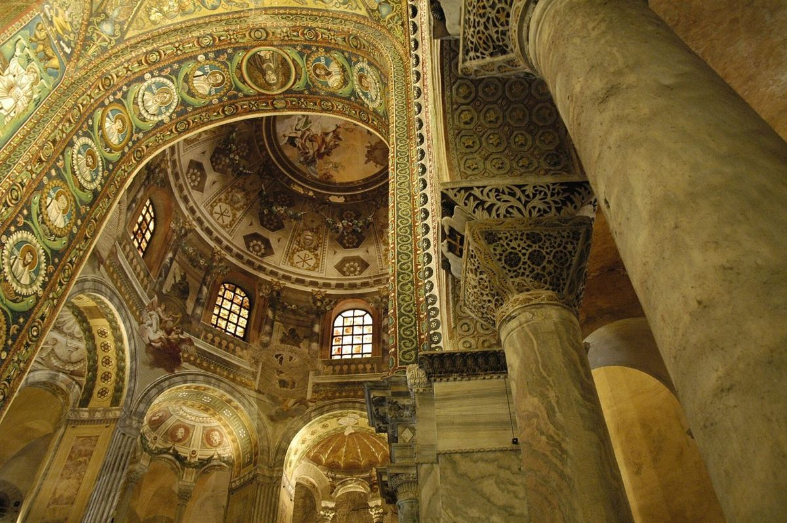
Arte bizantina
Il capitello bizantino è un tronco di piramide capovolto e traforato, sormontato dal pulvino della stessa forma.
Arte romana
Le figure dipinte hanno pose naturali; le strutture sono realistiche e tridimensionali.
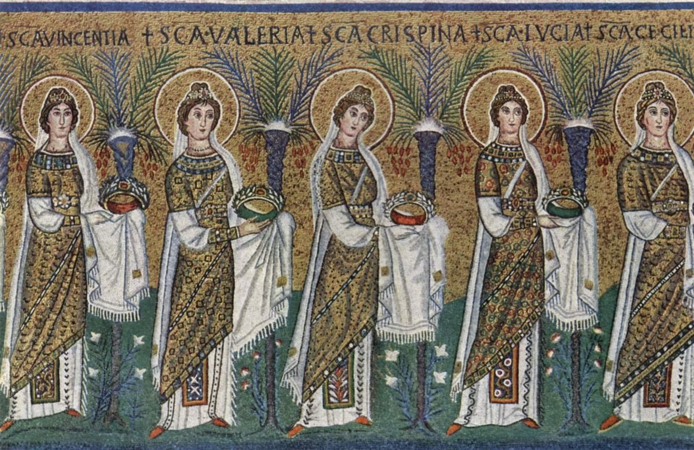
Arte bizantina
Le figure dei mosaici hanno pose rigide; le strutture sono semplificate e bidimensionali.
Arte romana
Figure ben proporzionate ed espressive; panneggi voluminosi.
Arte barbarica
Figure molto sproporzionate e inespressive; panneggi piatti e schematici.
Le parole dell'arteil glossario dell'Alto Medioevo
Undici parole che tornano in tutte le domande. Tocca una tessera per vedere l'opera da vicino; sotto trovi le definizioni.
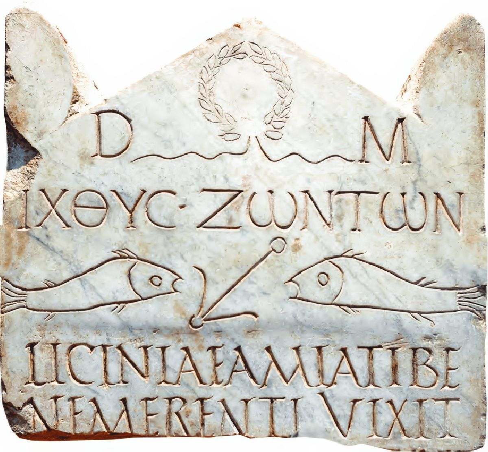
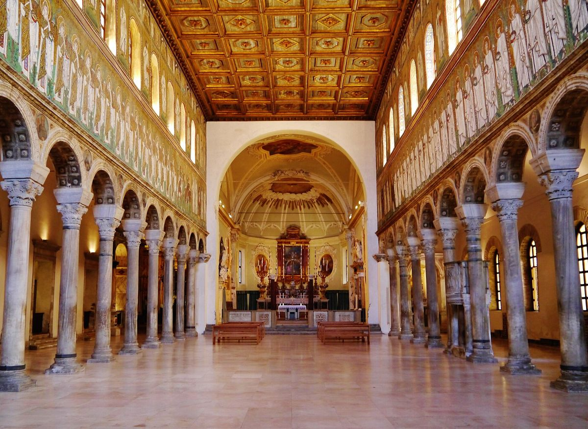
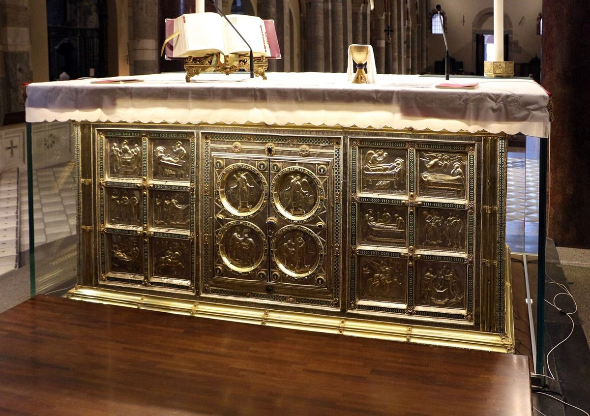
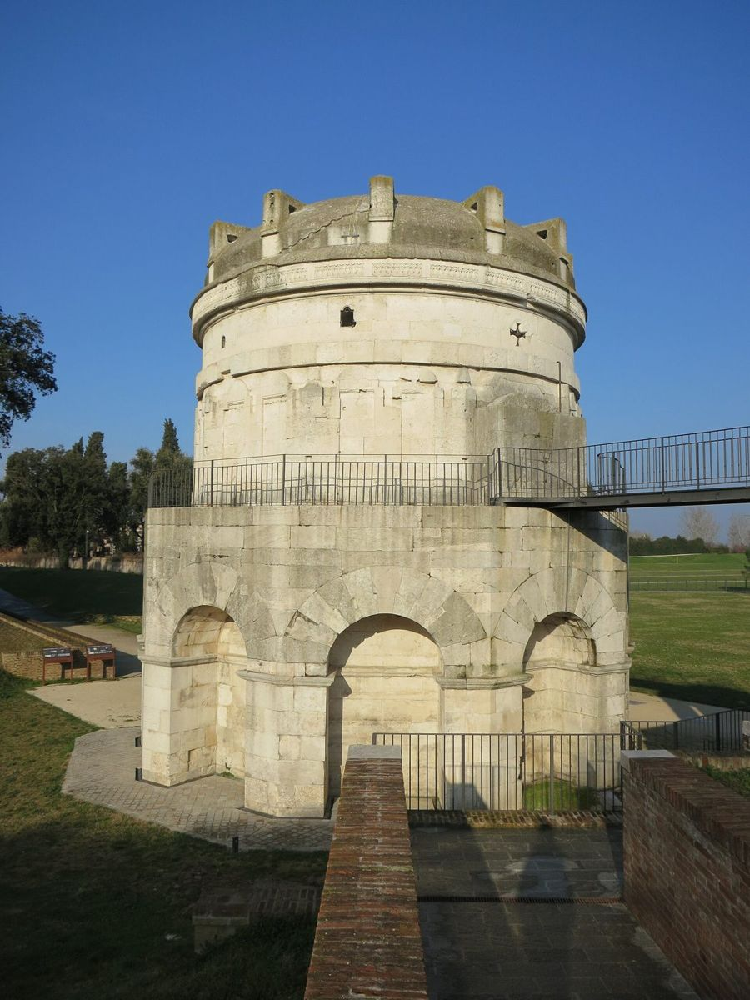
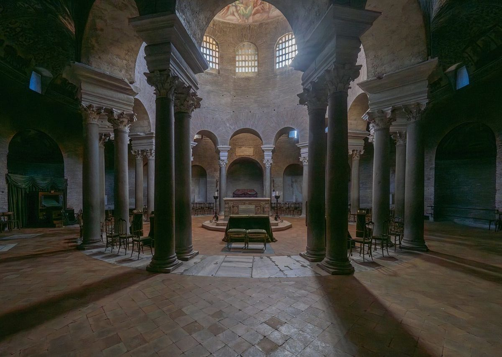
Cimitero sotterraneo con loculi alle pareti, usato dai cristiani per le sepolture, soprattutto prima dell'Editto di Milano.
Figura con un significato diverso da ciò che rappresenta: il pesce, per esempio, è simbolo di Cristo.
Edificio a pianta rettangolare percorso da file di colonne e tagliato da un braccio trasversale. Sul fondo c'è l'abside.
Spazio lungo tra due file di colonne (navata centrale) o tra una fila e la parete (navata laterale o navatella).
Navata trasversale che incrocia le altre: dà alla pianta la forma di una croce.
Spazio semicircolare in fondo alla chiesa, coperto da una mezza cupola detta catino absidale.
Tavolo presso l'abside su cui si celebra la messa. La faccia verso i fedeli, il paliotto, è sempre decorata.
Tomba monumentale per personaggi importanti, di solito a pianta circolare o poligonale.
Elemento a tronco di piramide rovesciato sopra il capitello. Tipico dell'architettura bizantina, quasi sempre decorato.
Mosaico da parete con figure statiche e bidimensionali su uno sfondo dorato.
Corridoio ad anello che gira attorno all'aula centrale di un edificio a pianta circolare o poligonale.
La Basilica di San Pietroarchitettura paleocristiana
Dopo il 313 i cristiani costruiscono le prime chiese. Non copiano i templi pagani: scelgono la basilica romana, un edificio civile usato come tribunale. Per battisteri e mausolei si ispirano invece al ninfeo, la costruzione circolare dei giardini delle ville.
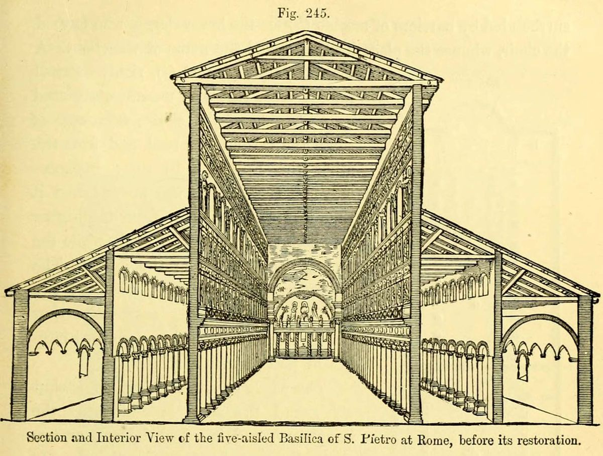
La casa di Dio
- Forma allungata, divisa da lunghe file di colonne: il corridoio centrale è la navata, quelli laterali le navatelle.
- Il transetto taglia le navate e disegna una croce.
- In fondo l'abside, semicilindrica, coperta dal catino absidale.
- All'ingresso il quadriportico: un cortile porticato per chi aspettava il battesimo.
La più importante chiesa di Roma
- Voluta da Costantino, costruita tra il 324 e il 329 dove la tradizione poneva la tomba di San Pietro, il primo papa.
- Cinque navate, transetto e un vasto quadriportico.
- L'abside era rivolta a ovest; nelle altre chiese sarà a est, verso il sole che sorge, simbolo di rinascita.
- Dopo più di mille anni fu demolita e ricostruita nel Cinquecento: quella di oggi non è la chiesa di Costantino.
Il Mausoleo di Santa Costanzauna ricca tomba circolare
Anche Costantina, figlia di Costantino, fa costruire edifici religiosi. Per la propria sepoltura ordina a Roma, verso il 350, un mausoleo di forma circolare.
Com'è fatto
- Al centro un'aula coperta da una cupola semisferica.
- Intorno corre un corridoio ad anello, il deambulatorio, coperto da una volta a botte.
- Aula e deambulatorio sono separati da dodici coppie di colonne prese da edifici romani, con grandi archi in mattoni.
- Nella nicchia di fronte all'ingresso stava il sarcofago di Costantina, in porfido rosso, la pietra riservata agli imperatori.
I mosaici più antichi
Sulla volta del deambulatorio ci sono i più antichi mosaici paleocristiani arrivati fino a noi. Sembrano scene di campagna, ma hanno il doppio significato tipico dei primi cristiani: la vendemmia richiama le parole di Cristo nel Vangelo di Giovanni, «Io sono la vite e voi i tralci».
Simboli nelle catacombeil significato nascosto
Prima del 313 i cristiani dovevano nascondere la propria fede. Per questo raffiguravano i soggetti religiosi con simboli: immagini con un primo significato innocuo (un animale, un mestiere) e un secondo significato religioso, noto solo agli altri cristiani.
Le catacombe
Cimiteri sotterranei scavati soprattutto a Roma dalla fine del II secolo. A differenza delle tombe egizie o etrusche contenevano centinaia di sepolture lungo una fitta rete di gallerie. Nelle pareti sono scavati i loculi, nicchie rettangolari chiuse con mattoni o lastre di marmo.
Il predicatore, Cristo
Un uomo che prega a braccia aperte e mani in fuori, in segno di offerta: simboleggia Cristo (per molti studiosi anche l'anima del defunto che prega) e ricorda la posizione sulla croce. Il Concilio di Nicea (325) stabilì che si pregasse in piedi, e questa rimase a lungo la posa ufficiale. Le mani giunte arriveranno solo più tardi, nel XII–XIII secolo, imitando il gesto di sottomissione del vassallo al suo signore.
Il pastore
Per un pagano è un mestiere; per un cristiano è Cristo, «il buon pastore» del Vangelo.
Il pesce
In greco ichthýs: sono le iniziali di «Gesù Cristo Figlio di Dio Salvatore». Disegnare un pesce era scrivere il nome di Cristo.
La colomba
Lo Spirito Santo oppure l'anima. Con il ramoscello d'ulivo nel becco, la pace.
Il pavone
La resurrezione: in autunno perde le penne e in primavera le rimette, come una rinascita dopo la morte.
Il Mausoleo di Galla Placidiaarte bizantina: architetture di luce
L'arte bizantina arriva in Italia nel V secolo. Porta elementi orientali: il gusto per la decorazione e la tendenza all'astrazione, cioè l'allontanamento dalla realtà concreta. La sua espressione tipica è il mosaico a fondo oro, che riflette la luce e fa sembrare l'architettura preziosa e luminosa.
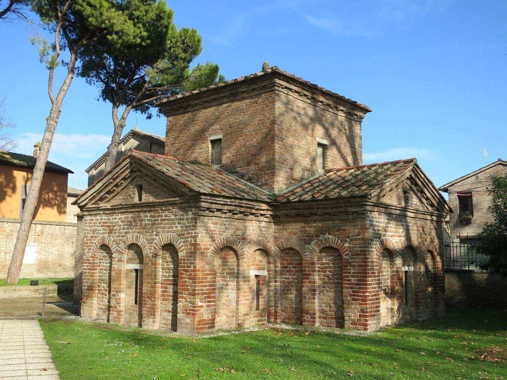
Fuori semplice, dentro una sorpresa
Galla Placidia, imperatrice d'Occidente dal 425 al 437, fa costruire il suo mausoleo a Ravenna verso il 450. Fuori è una semplice costruzione in mattoni a forma di croce, con archi ciechi e timpani che ricordano l'architettura romana. Dentro, i quattro bracci e la cupola sono interamente coperti di mosaici.
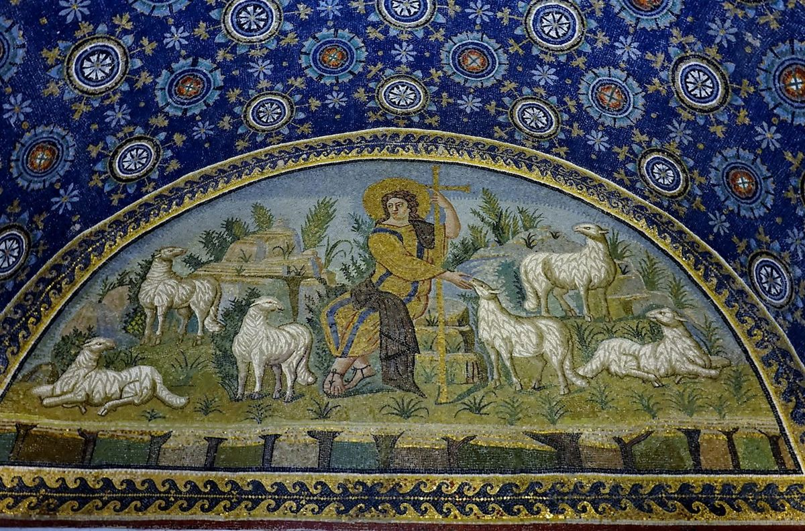
La lunetta: ancora romana
Nelle lunette (le superfici a semicerchio alla fine dei quattro bracci) lo stile ricorda la pittura romana: il Buon Pastore ha una posa naturale, lo spazio è profondo, il cielo azzurro, tutto è realistico.
La cupola: un cielo di 570 stelle
Un cielo blu scuro con 570 stelle dorate in cerchi concentrici, sempre più piccole verso il centro, per dare profondità. Al centro una croce, ai quattro angoli i simboli degli evangelisti: l'uomo per Matteo, il leone per Marco, il bue per Luca, l'aquila per Giovanni. Il cielo stellato è il sonno eterno, la morte; la croce al centro la resurrezione in Cristo.
Il tetto di stelle è un'idea antica: c'è già nella tomba della regina egizia Nefertari (1250 a.C.) e tornerà nella Cappella degli Scrovegni di Giotto (1303–1305). Secondo un'etimologia diffusa, «desiderio» viene dal latino de sidera, «dalle stelle».
Sant'Apollinare Nuovola comparsa del mosaico d'oro
La chiesa di Sant'Apollinare Nuovo a Ravenna ha ancora la forma di una basilica paleocristiana: tre navate senza transetto, separate da archi, e una grande abside. La novità sono i mosaici, i primi in stile pienamente bizantino (ca 568).
Due processioni
Sopra gli archi della navata centrale, due cortei di santi verso l'altare con le offerte: a sinistra ventidue Vergini, a destra ventisei Martiri.
- Sfondo d'oro: non è terra ma spazio divino.
- Pose rigide e ripetitive; le figure si distinguono per la preziosa decorazione degli abiti e dei gioielli.
- Bidimensionalità: manca il chiaroscuro, i panneggi sono schiacciati, i piedi divaricati bloccano il movimento, il prato non ha profondità.
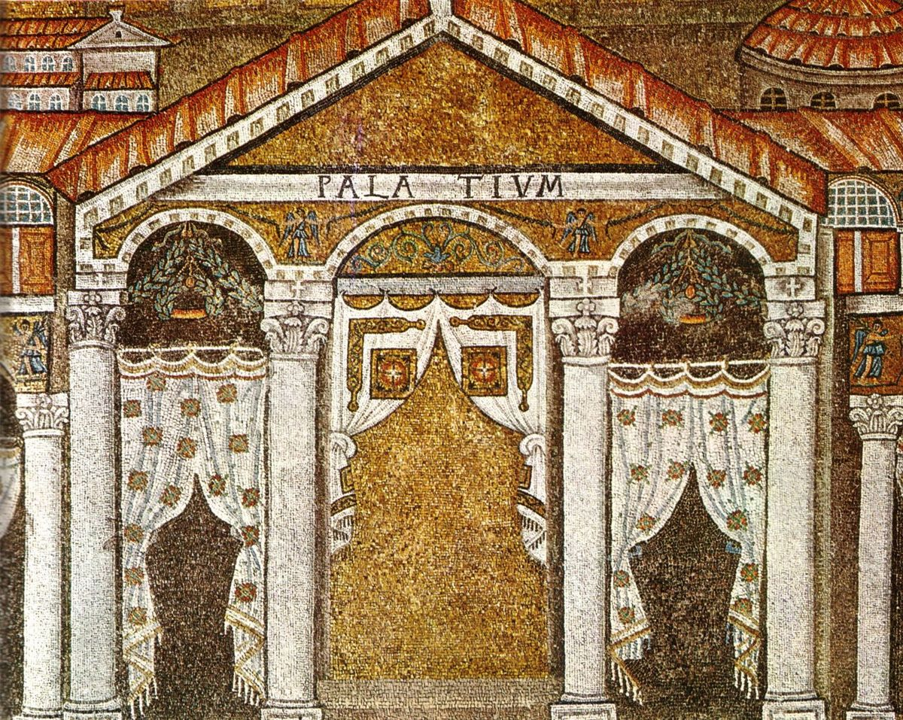
Il Palazzo di Teodorico
All'inizio del corteo dei Martiri c'è il cortile porticato del palazzo. Le due ali laterali sono ribaltate sullo stesso piano della facciata: la stessa negazione della profondità delle figure. Qui l'arte bizantina si allontana definitivamente da quella romana.
La Basilica di San Vitalelo spazio inafferrabile
A San Vitale (Ravenna, 532–547) anche l'architettura è pienamente bizantina. L'interno, in origine tutto coperto di mosaici, è uno spazio a pianta ottagonale di cui non si capisce subito la forma.
Come è fatta
- L'aula è circondata da esedre, pareti ricurve disposte come i petali di un fiore.
- Il deambulatorio su due livelli si affaccia sull'aula attraverso gruppi di tre archi aperti nelle esedre; si interrompe solo dove si apre l'abside.
- Gli archi poggiano su capitelli bizantini sormontati dal pulvino.
- Lo spazio appare dilatato e luminoso: un luogo ultraterreno, spirituale.
Capitelli tutti nuovi
Il capitello bizantino è un tronco di piramide rovesciato, traforato con motivi vegetali stilizzati come un ricamo di pietra. Sopra c'è il pulvino, della stessa forma: convoglia il peso dell'arco al centro del capitello e dà slancio all'insieme.
Giustiniano e Teodorai mosaici di San Vitale
L'imperatore Giustiniano e la moglie Teodora non sono mai stati a Ravenna, eppure sono raffigurati nei due mosaici più importanti di San Vitale, ai lati dell'abside: a sinistra lui, a destra lei. Li ha voluti il vescovo Massimiano, dopo la nomina ad arcivescovo (ca 546–548).
| titolo | luogo | data | tecnica | committente |
|---|---|---|---|---|
| Giustiniano e il suo seguito · Teodora e la sua corte | Basilica di San Vitale, Ravenna, ai fianchi dell'abside | ca 546–548 | mosaico in pietra e vetro, 264×365 cm ciascun pannello | il vescovo Massimiano |
Il potere con l'aureola
- Entrambi al centro, non coperti da nessuno; si riconoscono dal ricco abbigliamento, dalla corona di gemme e dall'aureola: il potere viene da Dio, l'imperatore è divinizzato come un santo.
- Accanto a Giustiniano il vescovo Massimiano, calvo e sfarzoso; il suo nome è scritto sopra, perché il committente vuole essere ricordato.
- A sinistra un gruppo di soldati con lance e uno scudo con il monogramma di Cristo.
Tutto su un solo piano
- Teodora, con le dame, sta davanti a una nicchia; come le Vergini e i Martiri tutti portano un'offerta verso l'altare.
- I piedi divaricati bloccano ogni movimento; lo sguardo è fisso e frontale.
- Il fondo è dorato; il prato sembra in discesa perché i piedi poggiano sulle punte; nessuna figura fa ombra; l'orlo dei vestiti ha poche pieghe geometriche: tutto è piatto.
Gli altari medievaliscultura longobarda e carolingia
L'arte longobarda è lontanissima dalle proporzioni di Greci e Romani: figure schematiche, piatte e deformate, fatte per essere capite subito. L'arte dei Franchi di Carlo Magno, invece, torna all'arte classica: figure proporzionate, posizioni naturali.
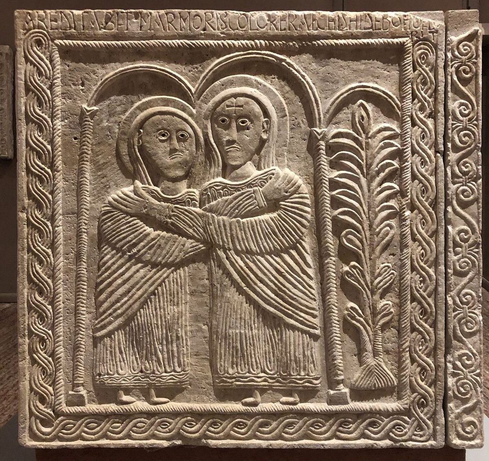
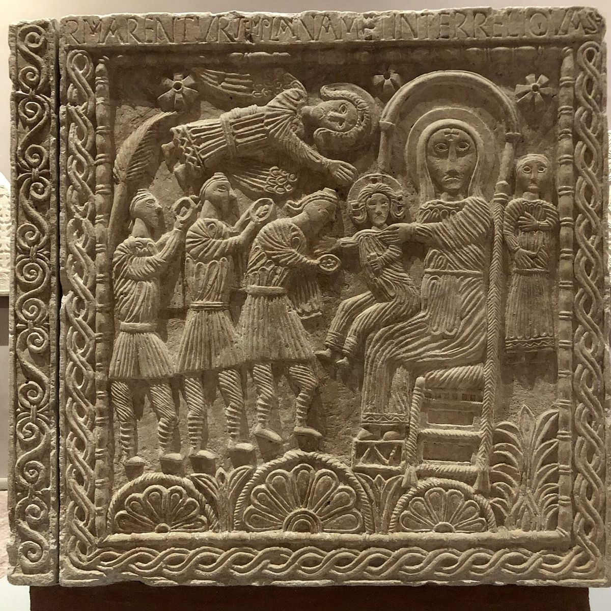
L'altare longobardo
Sul fronte Cristo in trono dentro una mandorla (un frutto che allude alla nascita e ricorda il pesce), circondato da quattro angeli dalle braccia esageratamente lunghe. Sui lati la Visitazione e l'Adorazione dei Magi: corpi sproporzionati, braccia curve, piedi microscopici. La Madonna è molto più grande dei Magi per indicarne l'importanza.
L'altare carolingio
Lamine d'oro e d'argento, smalti e gemme; prende il nome dall'autore, lo scultore Vuolvinio. Al centro Cristo con i simboli dei quattro evangelisti a formare una croce; intorno gli apostoli a gruppi di tre; sui lati dodici scene della vita di Cristo. Le figure hanno proporzioni corrette e pose realistiche come nei rilievi romani, ma l'insieme fitto di figure e decori è tipicamente medievale.
Carlo Magno e Aquisgranauno spazio romano con decori bizantini
Gli edifici di Carlo Magno imitano i modelli dell'antichità visti a Roma. Il capolavoro è la Cappella Palatina di Aquisgrana (oggi Aachen, nel ovest della Germania), 790–805.
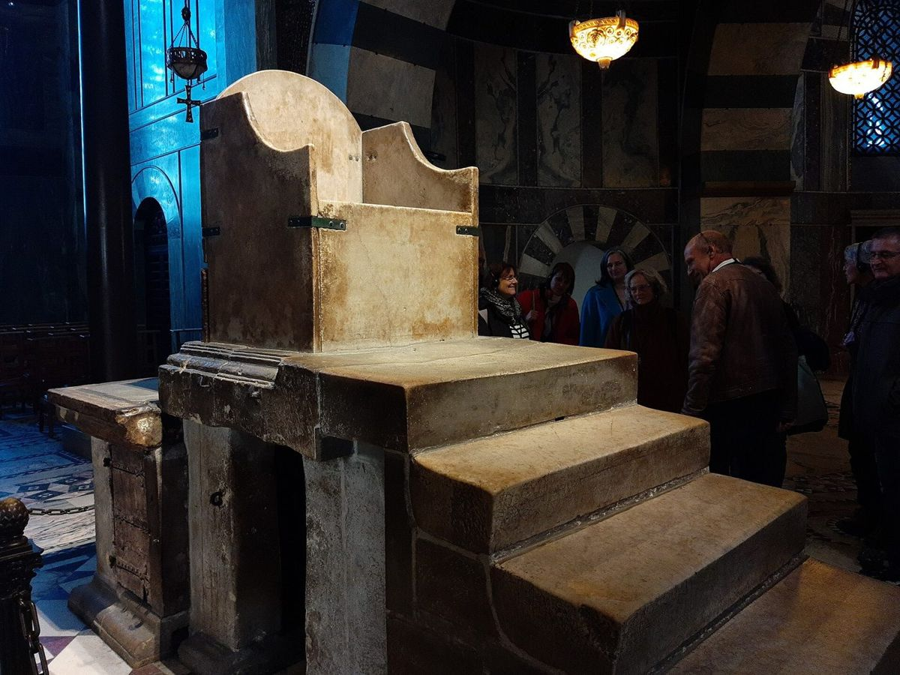
Analisi in tre passi
- Soggetto: chiesa imperiale a pianta poligonale con deambulatorio su due livelli e cupola ottagonale, alta 31 metri come un palazzo di dieci piani.
- Stile: elementi classici, come gli archi a tutto sesto e i pilastri massicci, ed elementi bizantini, come i mosaici d'oro e le colonnine con pulvino del secondo livello, ispirate a San Vitale.
- Significato: Carlo Magno si ispira all'architettura romana per sottolineare il legame con quell'impero.
Il trono
Sul secondo livello del deambulatorio Carlo fece collocare un trono in marmo, semplicissimo ma di grande valore: le lastre venivano dalla Chiesa del Santo Sepolcro di Gerusalemme. Non lo usò mai per un'incoronazione: imperatore lo divenne a Roma, in San Pietro, nell'800.
Riconosci l'operaallenamento con le fotografie
Nella verifica una fotografia può arrivare senza didascalia. Allenati a riconoscere le opere da pochi indizi: il materiale, i colori, la forma.
Mattoni e forme semplici
Esterni in mattoni, pianta a croce o poligonale: i mausolei e San Vitale a Ravenna.
Oro e figure rigide
Sfondo d'oro, figure frontali e immobili: i mosaici di Ravenna (Sant'Apollinare Nuovo, San Vitale).
Pittura semplice su parete
Figure sommarie, colori terrosi, pochi dettagli: gli affreschi delle catacombe.
Pietra scolpita e deformata
Braccia lunghissime, piedi minuscoli: l'Altare di Ratchis.
Oro, smalti e tante figure
Pannelli dorati fitti di scene: l'Altare di Vuolvinio.
Ottagono su due piani
Deambulatorio su due livelli, grandi archi verso l'aula, mosaici in alto: la Cappella Palatina.
Verifica simulatatutto insieme, come in classe
Sei prove del tipo che si trovano nelle verifiche di storia dell'arte: vero o falso, le date, la pianta della basilica, il riconoscimento delle opere, le schede e una descrizione guidata. Gli aiuti sono spenti.